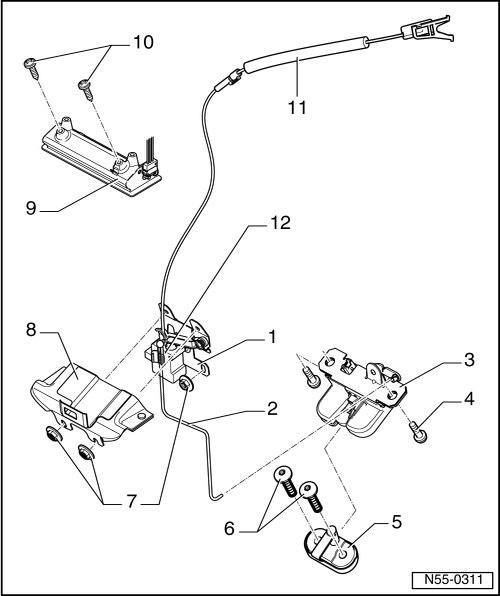

Locking and Unlocking Components Assembly Overview
Rear Lid
Locking and Unlocking Components Assembly Overview

1 Carrier piece
• With actuator lever for emergency release lever and Rear Lid Unlock Motor -V139-.
2 Operating rod
• From lid lock to actuator lever for emergency release lever.
3 Lid lock
• Removing and Installing, refer to --> [ Rear Lid Lock ] Rear Lid
4 Bolt
• Quantity: 2
• 25 Nm
5 Striker pin
• Also with closing assist.
• Removing and Installing, refer to --> [ Striker Pin with Closing Assist ] Rear Lid
• Adjusting
6 Bolt
• Quantity: 2
• 25 Nm
7 Hex nut
• Quantity: 3
• 8 Nm
8 Anti-theft protection
9 Handle
• For vehicles with spare wheel mount on the rear lid, refer to --> [ Rear Lid Handle, Spare Wheel Mounting on Rear Lid ] Rear Lid
10 Bolt
• Quantity: 2
• 4.5 Nm
11 Release
• For emergency release lever.
12 Motor to unlock rear lid
• Removing and Installing, refer to --> [ Rear Lid Unlock Motor ] Rear Lid